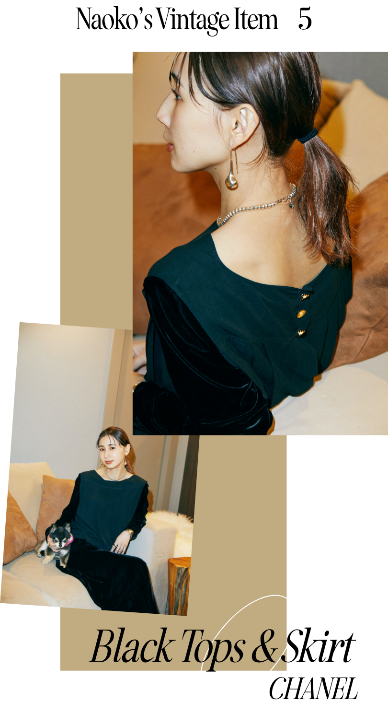

『「Ameri VINTAGE」を始める前に初めてNYへ買い付けしに行ったときに買った、宝物のひとつです。ショッピングをするときは、ファーストインプレッションを大事にしていて。流行よりも自分が何を求めているか、感性で選ぶようにしています』
『このときはTシャツと花柄のボトムスの組み合わせが大好きで、膨大な量の中からこれだ！と思いすぐに手に取りました。花柄の色合いやフロントボタンのディテールとか、ヴィンテージならではのよさが詰まっていますよね』
2022.04.15
時代を超えて愛されるヴィンテージアイテム。その魅力に惹かれた黒石奈央子さんは、ヴィンテージとオリジナルブランドを組み合わせたショップ「Ameri VINTAGE」を2014年に立ち上げた。もちろん、自身も大のコレクター。数多く所有されているアーカイブから、お気に入りの6点をクローゼットから選んでいただきました。
レトロな薔薇柄が素敵なプリーツスカート
コインモチーフの片耳イヤリング
『〈シャネル〉のイヤリングは、私が初めて買ったブランドヴィンテージ。すごく昔ですよ、10年以上前。代官山のヴィンテージショップで出合いました。デザイナーであるココ・シャネルの横顔が刻印された、コインモチーフのデザインです。煌びやかだけど品のあるゴールドも〈シャネル〉らしくて好き』
『80年代ごろまでってピアスよりもイヤリングが多いんですよね。だからいつの間にか、片方無くしちゃって……。つける頻度は減ったけど、絶対に捨てられない大切なものなんです』
『80年代ごろまでってピアスよりもイヤリングが多いんですよね。だからいつの間にか、片方無くしちゃって……。つける頻度は減ったけど、絶対に捨てられない大切なものなんです』
深紅のクラシックなドレス
『私がヴィンテージが好きな理由のひとつは、トレンドに関係なく長く着られるから。年に数回クローゼットの断捨離をするんですけど、基本的にヴィンテージのアイテムは 手放さないんです。〈プラダ〉の赤いドレスもずっと着ています。これもNYのショップで買いました。お呼ばれ用のドレスを探していた時期だったので、すぐにピンと来ました』
『なんと言ってもこのパターン。自然なドレープが本当に美しい！見ていてうっとりします。肩はバラのモチーフになっていてボリューミーなんだけど、ウエスト周りにたゆみがあって、ナチュラルな感じでもある。とてもバランスの取れた1着です』
『なんと言ってもこのパターン。自然なドレープが本当に美しい！見ていてうっとりします。肩はバラのモチーフになっていてボリューミーなんだけど、ウエスト周りにたゆみがあって、ナチュラルな感じでもある。とてもバランスの取れた1着です』
サイのモチーフが面白いレザーバッグ
『NYで年に数回開催されるヴィンテージマーケットで偶然見つけた、ノーブランドのレザーバッグ。金具がサイのモチーフなんですよ(笑)。脚までサイのディテールが再現されていて、しっかりこだわられているんです。普段持ち歩くことはないけど、バッグ棚に置いて眺めているだけで楽しい気分になれる、そんなヴィンテージアイテムがあってもいいのかなって思っています』
繊細な総レースのロングワンピース
『これも代官山のショップで手に入れました。一目惚れでしたね。ちょうどその頃私がレースアイテムにハマっていたときで、鏡で合わせたらイメージにぴったりで！買って何年も経ってますが、今でもよく着ています』
『旅先に着る特別なドレスを、あえて日常着として合わせるのが好み。デニムとか、あえてカジュアルな服とMIXして楽しんでいます。着丈の長いワンピースは極力丈直しをせず、そのまま着たいタイプ。代わりにウェッジソールのシューズを履いて、全体のバランスをまとめています』
『旅先に着る特別なドレスを、あえて日常着として合わせるのが好み。デニムとか、あえてカジュアルな服とMIXして楽しんでいます。着丈の長いワンピースは極力丈直しをせず、そのまま着たいタイプ。代わりにウェッジソールのシューズを履いて、全体のバランスをまとめています』

〈シャネル〉らしいモードな黒セットアップ
『〈シャネル〉といえば、黒でモードな印象。ずっと変わらない、不変的な美しさがあるブランドですよね。流行に左右されない軸があって、いつ、どんな時代でも新しさがあるなあって思います』
『決して、ブランドものだけがいいわけじゃないんです。魅力的なものは、ブランドでもノーブランドでも、新品でもヴィンテージにもある。ルールを課して選択肢を狭めてしまうよりも、自分に素直になってファッションを楽しんで欲しいなって思います。「AMERI vintage」のコンセプト”NO RULES FOR FASHION”も、そんな考えから生まれたんです』
『決して、ブランドものだけがいいわけじゃないんです。魅力的なものは、ブランドでもノーブランドでも、新品でもヴィンテージにもある。ルールを課して選択肢を狭めてしまうよりも、自分に素直になってファッションを楽しんで欲しいなって思います。「AMERI vintage」のコンセプト”NO RULES FOR FASHION”も、そんな考えから生まれたんです』
『着たお洋服を毎回クリーニングに出すって大変じゃないですか。だけど家の洗濯機で洗ってしまうと生地が痛んだり、型崩れしちゃう。ケアが難しいヴィンテージならなおさらです。LG Stylerがあればそんな悩みが解決するかなと思い、導入することにしました。実際に使ってみて、本当に驚きました。仕上がったニットがフワフワで、すごく気持ち良くって。食事後についた匂いも落としてくれるから、帰宅後はLG Stylerに直行です(笑)』
『見た目もミラー付きでスタイリッシュだし、置いてみたら圧迫感なくスッキリ。黒色の家具やインテリアとも相性がいいですね。それに、家に遊びに来た友人がみんな口を揃えて「使いたい！」って言うぐらい、評判もいいんですよ』
『見た目もミラー付きでスタイリッシュだし、置いてみたら圧迫感なくスッキリ。黒色の家具やインテリアとも相性がいいですね。それに、家に遊びに来た友人がみんな口を揃えて「使いたい！」って言うぐらい、評判もいいんですよ』
黒石奈央子 (くろいしなおこ)
大手アパレルブランドにてVMDとして活躍後、独立。ヴィンテージアイテムとオリジナルブランドを取り扱う「Ameri VINTAGE」を立ち上げ、同ブランドの代表取締役兼ブランドディレクターを務める。実店舗は東京や大阪のほか、3/5名古屋店をオープン。服作りの過程や自身のライフスタイルを発信するYouTube「NO RULES FOR」も人気。
大手アパレルブランドにてVMDとして活躍後、独立。ヴィンテージアイテムとオリジナルブランドを取り扱う「Ameri VINTAGE」を立ち上げ、同ブランドの代表取締役兼ブランドディレクターを務める。実店舗は東京や大阪のほか、3/5名古屋店をオープン。服作りの過程や自身のライフスタイルを発信するYouTube「NO RULES FOR」も人気。
https://youtube.com/c/NORULESFOR
Interview & Text: Minori Okajima